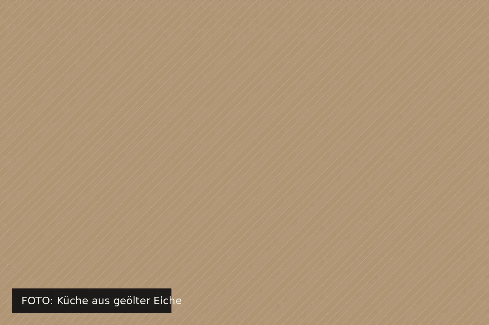
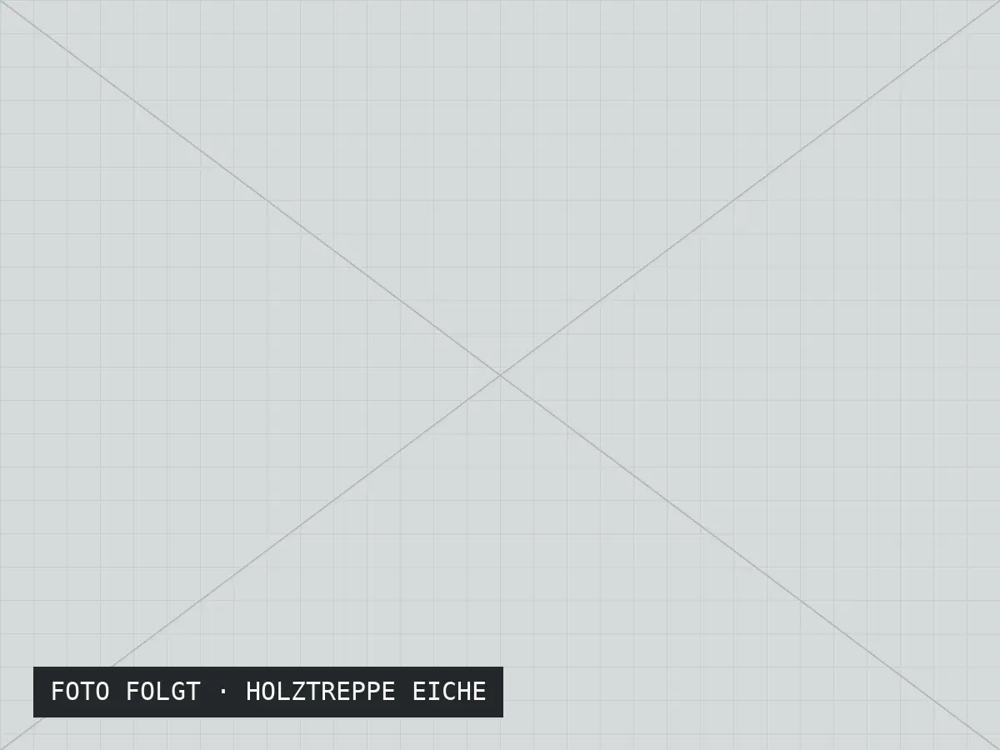
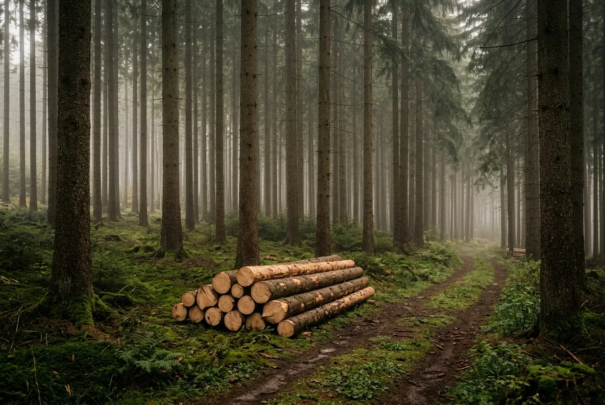

Küche in einem Haus am Hang
Grifflose Fronten, eine durchgehende Nische für Gewürze und Messer, Hochschränke bis unter die Decke.
- Holz
- Eiche, regional
- Oberfläche
- Naturöl, weiß pigmentiert
- Bauzeit
- 9 Wochen
- Ort
- Bischofsgrün
Schreinerei im Fichtelgebirge
Küchen, Einbaumöbel und Treppen aus Massivholz – geplant mit Ihnen, gefertigt in unserer Werkstatt in Lindenreuth und montiert von denselben Menschen, die sie gebaut haben.
01
Jedes Stück wird für den Raum geplant, in dem es später steht. Deshalb beginnt jeder Auftrag mit einem Aufmaß bei Ihnen vor Ort.
Fronten und Korpusse aus Massivholz oder furnierter Platte, kombiniert mit Geräten Ihrer Wahl. Wir planen Arbeitshöhen, Wege und Stauraum nach Ihrem Alltag.
Schränke unter Dachschrägen, Garderoben, Bücherwände und Sitzbänke – millimetergenau eingepasst, auch in Altbauten mit schiefen Wänden.
Holztreppen, Türen, Wandverkleidungen und Böden. Wir arbeiten eng mit Architekturbüros und anderen Gewerken zusammen.
Esstische aus einer Bohle, Sideboards, Betten. Auf Wunsch aus Holz mit Geschichte – etwa aus einem Baum von Ihrem eigenen Grundstück.
02
Zu jedem Projekt die Holzliste: woraus es gebaut ist, wie die Oberfläche behandelt wurde und wie lange es von der Planung bis zur Montage gedauert hat.

Grifflose Fronten, eine durchgehende Nische für Gewürze und Messer, Hochschränke bis unter die Decke.

Aus zwei Bohlen eines Nussbaums, der auf dem Grundstück der Familie stand. Drei Jahre luftgetrocknet, dann in unserer Werkstatt verleimt.
03

„Fichte und Lärche holen wir aus dem Fichtelgebirge, Eiche und Esche aus dem Frankenwald. Ich kenne die meisten Sägewerke, von denen wir kaufen, seit ich ein Kind bin.“
Kurze Wege sparen Transport, vor allem aber wissen wir, wie das Holz gewachsen ist und wie lange es getrocknet wurde. Exotische Hölzer verarbeiten wir nur auf ausdrücklichen Wunsch und nur mit Herkunftsnachweis.
04
Wir kommen zu Ihnen, messen den Raum aus und besprechen, wie Sie ihn nutzen.
Sie erhalten Zeichnungen, Materialmuster und einen verbindlichen Festpreis.
Gebaut wird ausschließlich in unserer Werkstatt. Sie können jederzeit vorbeischauen.
Unsere eigenen Leute bauen ein, justieren nach und nehmen den Verpackungsmüll wieder mit.
05
Feste Arbeitszeiten, kein Akkord, eigene Projekte vom Aufmaß bis zur Montage. Und eine Werkstatt, in der Maschinen gewartet werden, bevor sie kaputtgehen.
06
Erzählen Sie uns kurz, was Sie vorhaben. Wir melden uns innerhalb von zwei Werktagen und vereinbaren einen Termin für das Aufmaß.